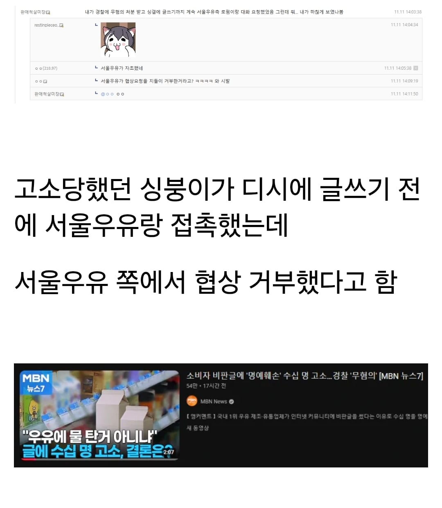
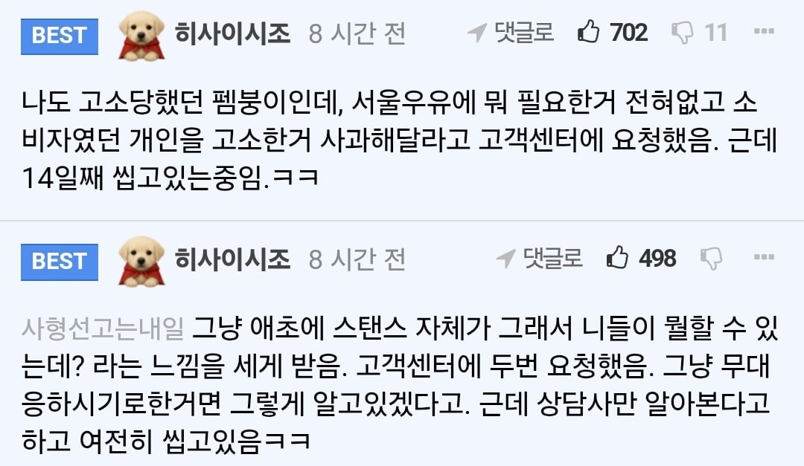

돈주고 끝낼거를 굳이 일을 크게 키운다고?ㅋㅋㅋㅋㅋㅋㅋㅋㅋ


돈주고 끝낼거를 굳이 일을 크게 키운다고?ㅋㅋㅋㅋㅋㅋㅋㅋㅋ

유럽우유는 낙농가 수입의 3~40%가 직불금같은 보조금임 유사비도 우리나라보다 싸니까 경쟁이 불가능하지
관세 제로로 가정 안해도 운임비는 붙어서 들어온다
내부 경쟁이 0에 수렴하는게 문제임
하나가 잘되면 배끼고 밟아죽이고 가격은 높게 성분은 끔찍하게
내부 변수가 일어날수 없으면 외부요인 끌어와서 시장 뒤집는게 맞음
그런식이면 국내 농업 싹 다 포기해야함 싱가폴마냥
서울우유도 연간 영업이익 2%초반대인데 이정도면 거의 산소호흡기만 붙여놓은거임
기업이 왤캐 깝치지?
노브랜드에도 수입멸균 우유 팔던데 ...
윗대가리 중에 병신이 있는 게 틀림없어.
매일 멸균우유 온라인에서 사먹는데 가성비 좋아 굳이 수입으로 안가도 됨
서울우유 왜그러냐 ㅋㅋㅋㅋ
자두과자
서울우유란 조직은 축산업자들의 협동조합이기 때문에 소비자 눈치를 보는 게 아니라 조합원들 눈치를 봄. 즉 소비자들이 뭐라고 하건 조합원들 중에 고소하자고 하는 사람이 많으면 할 수 밖에 없음. 남양도 대가리 박는 와중에 서울우유만 독야청청할 수 있는 이유임.
음.. 제가 저 본문에 히사이시조 닉쓰는사람인데, 원글 삭제됐고 싱벙갤 이번에 고소당했다고 까발린 아저씨 원글도 삭제됐습니다. 뭔가 딜을 했거나 삭제요청을 했던거같네요 ^^..
그렇습니까 히사이시조님
응 폴란드 먹을꺼야
저온살균유 나왔다고 죽여버리고 이상한 기준 만들어서 1등급이니 개지랄이니 할 때부터 업계가 썩었어
원유 고정가격제 없었어도 외부에서 경쟁하려고 들어오면 진즉 박살났을 생태계지
소비자 기만이 관행임